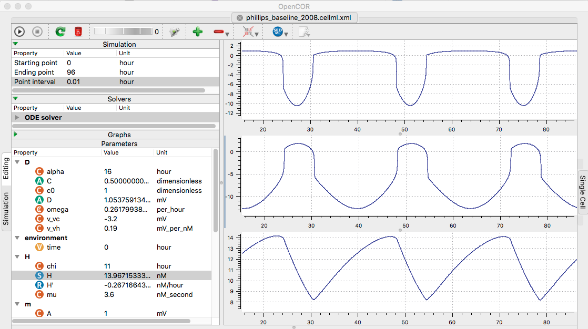

Models for the paper:
Phillips AJ, Robinson PA (2008) Sleep deprivation in a quantitative
physiologically based model of the ascending arousal system.
J Theor Biol 255:413-23[PubMed]
are available at the cellml.org website:
Baseline: https://models.cellml.org/exposure/c91424a0142408302b36674951c62d21/phillips_baseline_2008.cellml/view
Sleep deprived: https://models.cellml.org/exposure/c91424a0142408302b36674951c62d21/phillips_sleep_deprivation_2008.cellml/view
Example: Open the baseline model file in opencor. Change the
ending point to 96 Hours, the point interval to 0.01, and open three
graphs (click plus sign three times). For the first graph
right-clicking Vm in m list (select Plot against integration
variable), and for the second right click Vv in the v list and
select to plot against integration variable, and for the third graph
select H in the H list, and again plot against integration
variable. Finaly run (click upper left play triangle) creates the
following graph similar to fig 2 a, b, c (the graph's axes can be
changed by drag with the left mouse button to pan and the right
mouse button to zoom):
